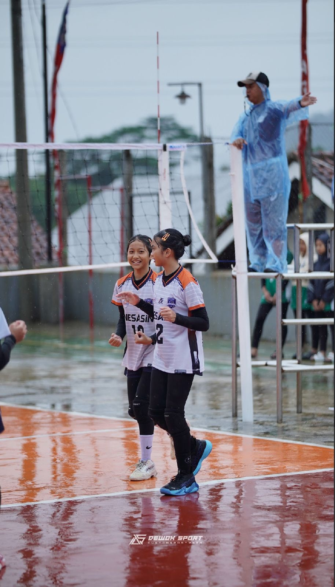
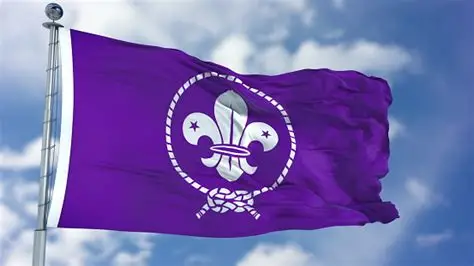
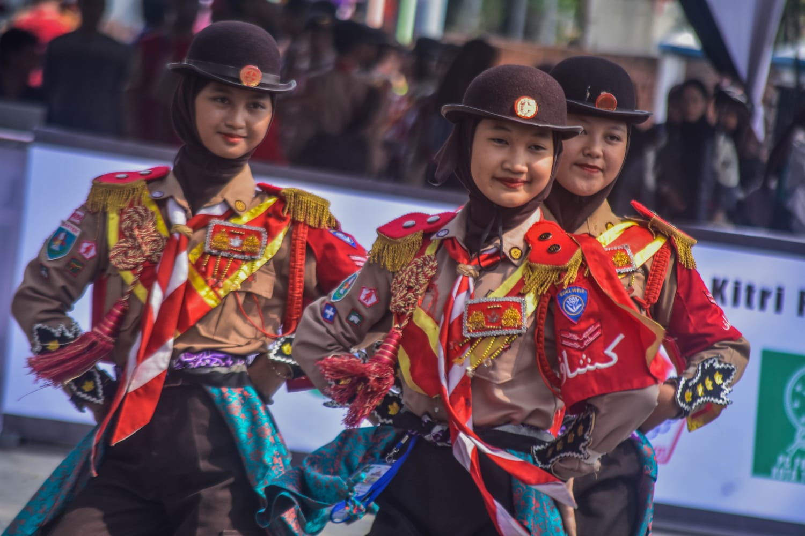
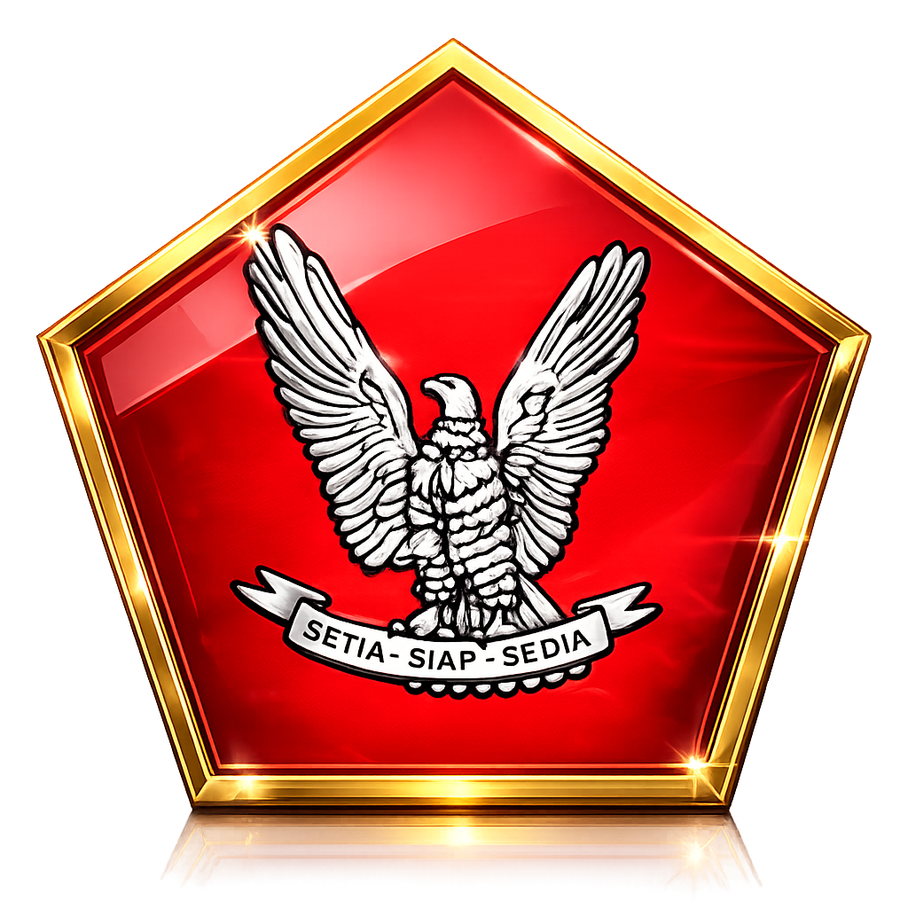
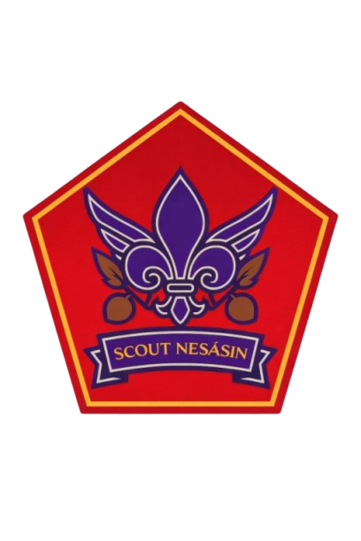

Artikel Terbaru
Artikel Terbaru

BOLA VOLI Hobi dan Bagian Yang Tidak Bisa Dilepaskan
Bola voli adalah hobi yang tidak bisa saya lepaskan. Saya, Akhila Octaviana, menemukan semangat dan kebahagiaan setiap kali berada di lapangan, bermain bersama tim, dan berjuang meraih poin demi poin. Melalui olahraga ini, saya belajar tentang kerja sama, ketekunan, dan sportivitas. Setiap latihan dan pertandingan menjadi pengalaman berharga yang tidak hanya meningkatkan kemampuan fisik, tetapi juga membentuk mental yang kuat. Bagi saya, bola voli bukan sekadar hobi, melainkan bagian dari perjalanan untuk terus berkembang dan menjadi pribadi yang lebih disiplin serta penuh semangat.

menggapai WOSM
Saya, Akhila Octaviana, memiliki mimpi besar untuk menggapai dunia melalui WOSM, organisasi kepanduan dunia yang menjadi wadah bagi generasi muda untuk berkembang, belajar, dan berkontribusi. Dengan semangat pramuka yang penuh disiplin, kemandirian, dan jiwa kepemimpinan, saya bertekad untuk terus melangkah maju, mengasah kemampuan, serta membawa nama baik diri, sekolah, dan bangsa ke tingkat internasional. Perjalanan ini bukan hanya tentang meraih prestasi, tetapi juga tentang membentuk karakter, memperluas wawasan, dan menjalin persaudaraan global demi masa depan yang lebih baik.

PRAMUKA Membangun Karakter
Pramuka menjadi bagian penting dalam membangun karakter dan kepemimpinanku. Saya, Akhila Octaviana, merasakan bagaimana setiap kegiatan pramuka melatih kedisiplinan, tanggung jawab, serta keberanian dalam mengambil keputusan. Melalui berbagai pengalaman, baik dalam latihan maupun kegiatan di lapangan, saya belajar untuk bekerja sama, menghargai perbedaan, dan memimpin dengan bijaksana. Pramuka tidak hanya mengajarkanku keterampilan, tetapi juga membentuk jati diri yang kuat, sehingga saya siap menghadapi tantangan dan terus berkembang menjadi pribadi yang lebih baik.

PRAMUKA GARUDA
Pramuka Garuda merupakan tingkatan tertinggi dalam kegiatan kepramukaan yang menjadi simbol prestasi non-akademik paling bergengsi di Indonesia. Penghargaan ini diberikan oleh Gerakan Pramuka Indonesia kepada anggota yang memiliki dedikasi tinggi, keterampilan unggul, serta sikap teladan dalam kehidupan sehari-hari. Untuk mencapainya dibutuhkan proses panjang, kerja keras, dan konsistensi dalam mengembangkan diri baik di bidang kepemimpinan, sosial, maupun keterampilan. Saya, Akhila, akan menggapainya dengan penuh semangat, disiplin, dan tekad kuat untuk menjadi pribadi yang berprestasi dan membanggakan.

SMP NEGERI 1 SINDANG
Saya, Akhila Octaviana, seorang murid yang berasal dari pangkalan SMPN 1 Sindang, Kwarran Sindang, Kwarcab Majalengka, Kwarda Jawa Barat, memiliki tekad yang kuat untuk terus berkembang dan berjuang dalam setiap langkah kehidupan. Bagi saya, menjadi bagian dari Pramuka bukan hanya sekadar kegiatan, tetapi sebuah perjalanan untuk belajar tentang arti tanggung jawab, kedisiplinan, dan kepedulian terhadap sesama. Saya berusaha untuk selalu mengisi waktu dengan hal-hal positif, belajar dari setiap pengalaman, baik itu keberhasilan maupun kegagalan. Perjuangan tidak selalu mudah, tetapi dengan semangat pantang menyerah, saya yakin setiap tantangan dapat menjadi pelajaran berharga yang membentuk diri menjadi lebih baik. Saya ingin terus mengasah kemampuan, memperluas wawasan, serta memberikan manfaat bagi lingkungan sekitar. Dengan tekad yang kuat, saya percaya bahwa setiap usaha yang dilakukan dengan sungguh-sungguh akan membawa hasil yang membanggakan, tidak hanya untuk diri sendiri, tetapi juga untuk orang tua, sekolah, dan organisasi yang saya cintai. .

Dewan Penggalang
Saya bangga menjadi bagian dari Dewan Penggalang NESASIN, karena di sinilah saya belajar arti pengabdian, tanggung jawab, dan kebersamaan. Melalui setiap kegiatan, saya berusaha untuk selalu berbakti, terus belajar, dan menjadi pribadi yang bermanfaat bagi sesama. Menjadi bagian dari perjalanan ini bukan hanya tentang organisasi, tetapi juga tentang ikut berjuang membangun karakter, disiplin, dan semangat pantang menyerah. Saya percaya, setiap langkah kecil yang saya lakukan di sini adalah bagian dari perjuangan besar untuk masa depan yang lebih baik. .
.jpeg)
.jpeg)
.jpeg)
.jpeg)